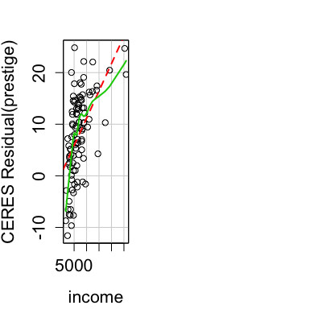
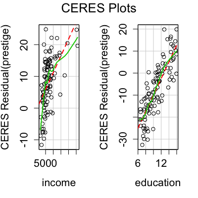

ceresPlots(model, terms = ~., layout = NULL, ask, main, ...) ceresPlot(model, ...) ceresPlot(model, variable, id.method = list(abs(residuals(model, type = "pearson")), "x"), labels, id.n = if (id.method[1] == "identify") Inf else 0, id.cex = 1, id.col = palette()[1], line = TRUE, smoother = loessLine, smoother.args = list(), smooth, span, col = palette()[1], col.lines = palette()[-1], xlab, ylab, pch = 1, lwd = 2, grid = TRUE, ...) ceresPlot(model, ...)
lm or glm.~. is to plot against all numeric predictors. For example, the
specification terms = ~ . - X3 would plot against all predictors
except for X3. Factors and nonstandard predictors such as B-splines are
skipped. If this argument is a quoted name of one of the predictors, the
component-plus-residual plot is drawn for that predictor only.
c(1, 1) or c(4, 3), the layout
of the graph will have this many rows and columns. If not set, the program
will select an appropriate layout. If the number of graphs exceed nine, you
must select the layout yourself, or you will get a maximum of nine per page.
If layout=NA, the function does not set the layout and the user can
use the par function to control the layout, for example to have
plots from two models in the same graphics window.
TRUE, ask the user before drawing the next plot; if FALSE, the default, don't ask.
This is relevant only if not all the graphs can be drawn in one window.ceresPlots passes these arguments to ceresPlot.
ceresPlot passes them to plot.
id.n=0 for labeling no points. See
showLabels for details of these arguments.
TRUE to plot least-squares line.
ScatterplotSmoothers for available
smooethers and arguments.
smooth=TRUE then smoother is set to loessLine,
and if span is specified, it is added to smoother.args.palette
and par).
col.lines=c("red", "red")
1
(a circle, see par).
2 (see par).
These functions draw Ceres plots for linear and generalized linear models.
Ceres plots are a generalization of component+residual (partial residual) plots that are less prone to leakage of nonlinearity among the predictors.
The function intended for direct use is ceresPlots.
The model cannot contain interactions, but can contain factors. Factors may be present in the model, but Ceres plots cannot be drawn for them.
NULL. These functions are used for their side effect: producing
plots.
Cook, R. D. and Weisberg, S. (1999) Applied Regression, Including Computing and Graphics. Wiley.
Fox, J. (2008) Applied Regression Analysis and Generalized Linear Models, Second Edition. Sage.
Fox, J. and Weisberg, S. (2011) An R Companion to Applied Regression, Second Edition, Sage.
Weisberg, S. (2005) Applied Linear Regression, Third Edition. Wiley.

